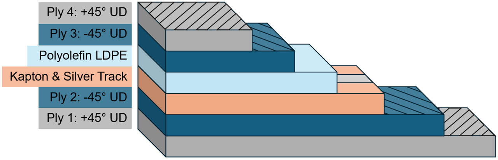
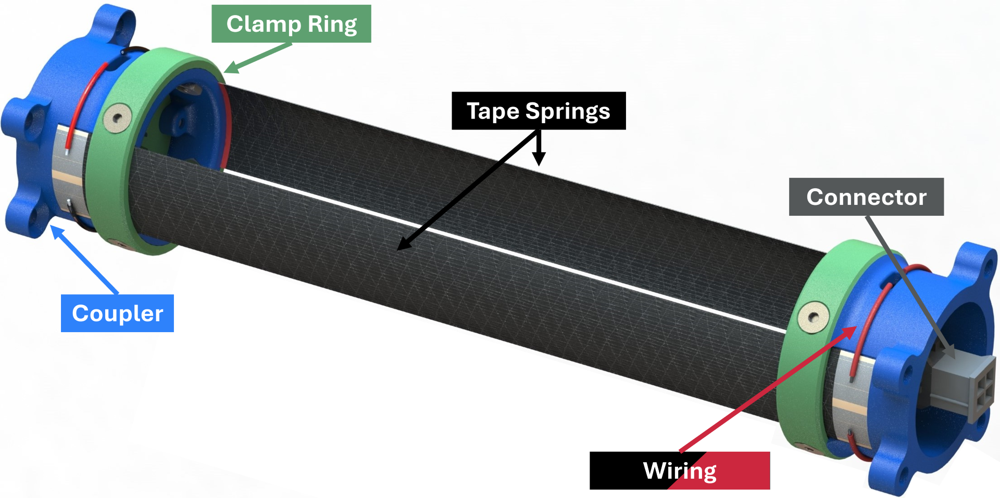
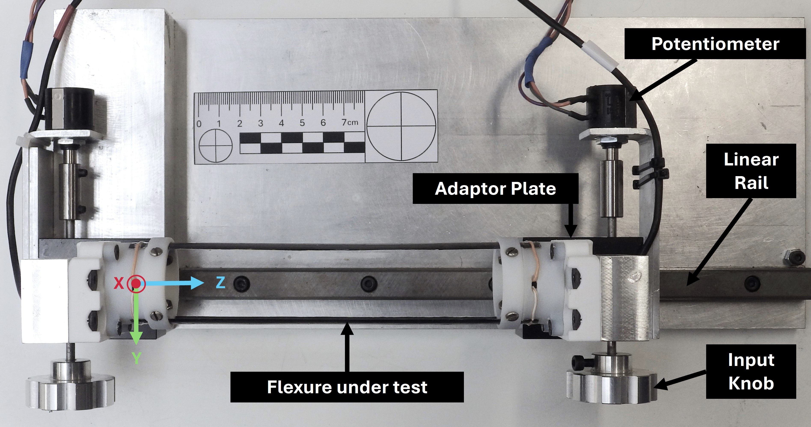
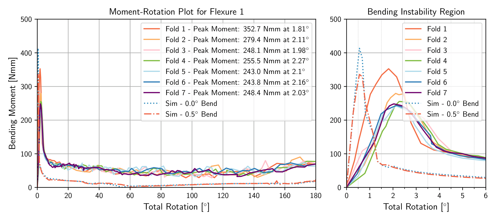
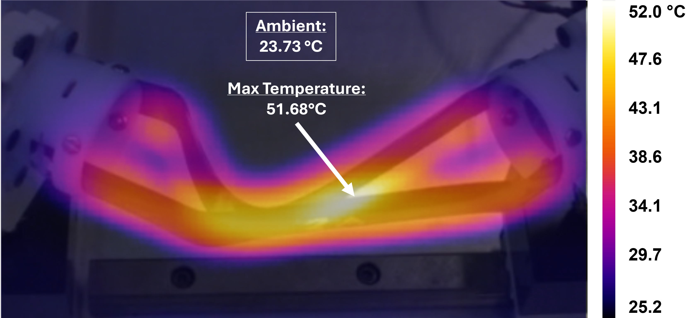
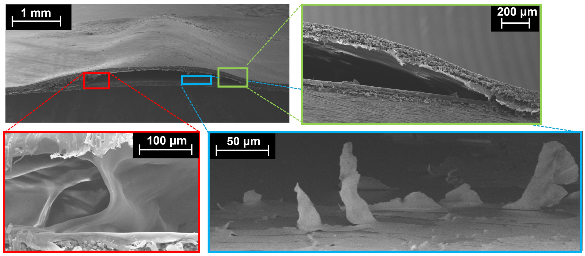

Integrated Electrical Connections in Deployable Composite Tube Flexures
Alberto Progida & Matthew J. Santer — Department of Aeronautics, Imperial College London
10.1007/s12567-026-00698-z
Overview
Spacecraft deployable booms and hinges rely on tube flexures — pairs of curved carbon-fibre tape springs that self-latch into a rigid deployed state and can be stowed compactly for launch. This paper introduces a method to make these structural hinges carry electrical signals and power at the same time, eliminating dedicated wire harnesses and reducing system mass.
The approach embeds a multi-layer conductive film at the midplane of the laminate: silver nanoparticle tracks are inkjet-printed onto a 25 µm Kapton substrate, then encapsulated in a thermoplastic polyolefin film to prevent short-circuits with the surrounding carbon fibres. The complete stackup — [+45/−45 / Kapton+Ag / PO / −45/+45] — is co-cured on a cylindrical mandrel under vacuum at 150 °C, producing a 127 µm-thick flexure with integral electrical traces.

Assembly & Testing
Four tube flexures were manufactured — each comprising two tape springs bonded to 3D-printed couplers — and subjected to seven fold-unfold cycles on a custom bending rig. Moment and rotation were measured simultaneously with track resistance and RS-232 signal integrity, giving a complete picture of how the electrical and mechanical performances evolve together under repeated high-strain loading.

Test Setup
Each flexure was mounted between two thin-walled shafts instrumented with full-bridge strain gauge rosettes (±45° to the shaft axis), one fixed and one free to translate along a linear rail to maintain pure bending throughout the fold. End rotations were applied via worm-gear knobs and measured by analogue potentiometers at ±5.4 µ° resolution. Track resistance was logged continuously alongside moment and rotation using a Keysight 34410A multimeter, and RS-232 signal integrity was checked at the start and end of each fold.

Mechanical Results
The flexures behaved as expected structurally: a sharp peak moment followed by snap-through and a stable constant moment region. Repeated folding produced a statistically significant 32% reduction in peak locking moment between the first and subsequent folds — a "breaking-in" behaviour consistent with progressive compressive matrix damage — while snap angle and constant moment remained unchanged. Abaqus/Explicit quasi-static simulations with a 0.5° mounting misalignment matched first-fold peak moments to within 4%.

Electrical & Thermal Results
No track failures were recorded across all 28 fold cycles. Every flexure successfully transmitted RS-232 data at 115,200 baud — the maximum standard rate — in both stowed and deployed configurations, and four flexures daisy-chained in series maintained full-rate communication. Power transmission was demonstrated at 2.5 W, with no measurable change in electrical resistance or signal quality over the test campaign. Resistive heating to ~50 °C was also achieved, but induced delamination-buckling failure at the silver-track/polyolefin interface during stowage — identifying bond strength as the critical barrier to shape-memory applications.


Key Findings
- →RS-232 digital communication at 115,200 baud sustained in both deployed and fully stowed states, with up to four flexures daisy-chained in series.
- →2.5 W power delivery demonstrated with no measurable degradation in resistance or signal quality over seven fold-unfold cycles.
- →Resistive heating to ~50 °C is achievable in the deployed state, but causes delamination-buckling failure during stowage — bond strength improvement (plasma treatment, laser micro-texturing) is identified as the key next step.
- →A 37% reduction in peak stiffness between folds is consistent with compressive matrix damage observed in non-interleaved flexures in prior studies, not attributable to the conductive interleave alone.